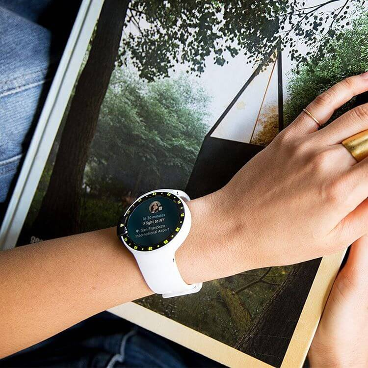
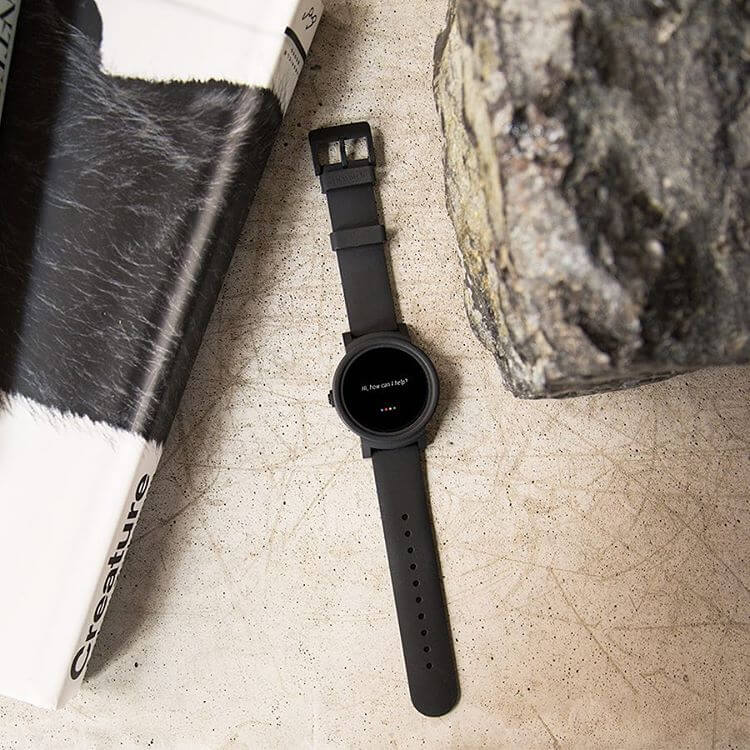

<section class="row carousel-wrapper">
    <div class="col-lg-12 clear-padding">
        <h2>Будь на стиле вместе с TicWatch</h2>
        <div class="carousel" id="carousel">
            <div class="carousel__switcher carousel__switcher_left" id="carousel__switcher_left"></div>
            <div class="carousel__switcher carousel__switcher_right" id="carousel__switcher_right"></div>
            <div class="carousel__slide-holder" id="carousel__slide-holder">
                
                
                
                
                
                
                
            </div>
        </div>
    </div>
</section>